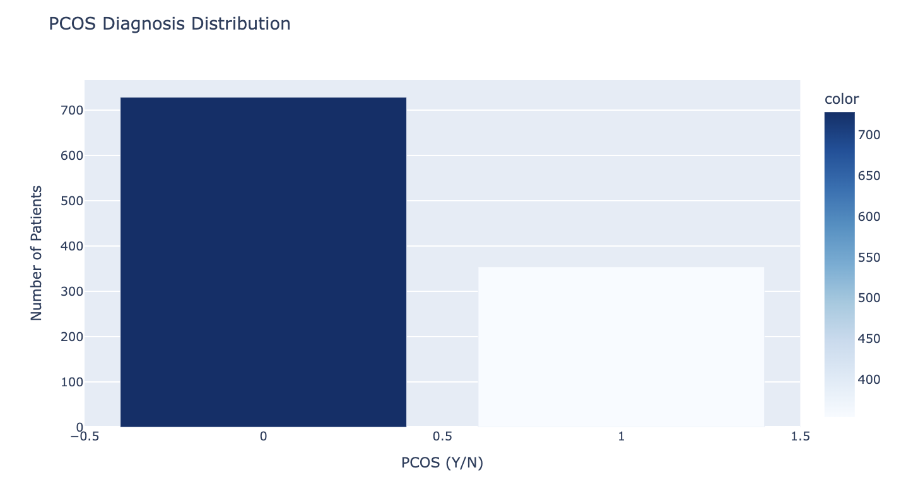
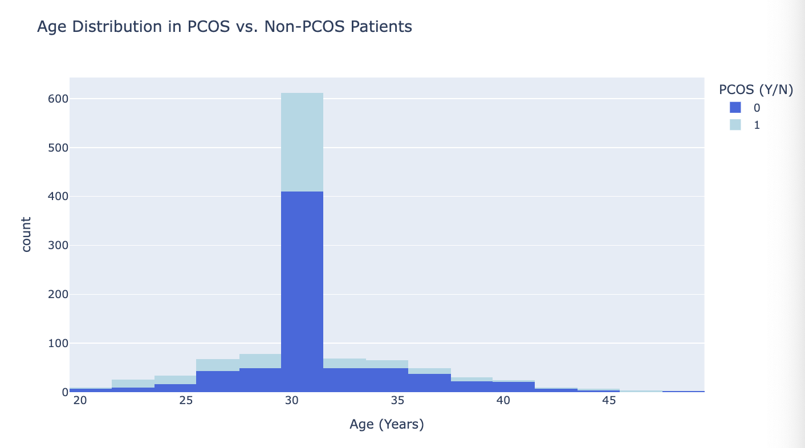
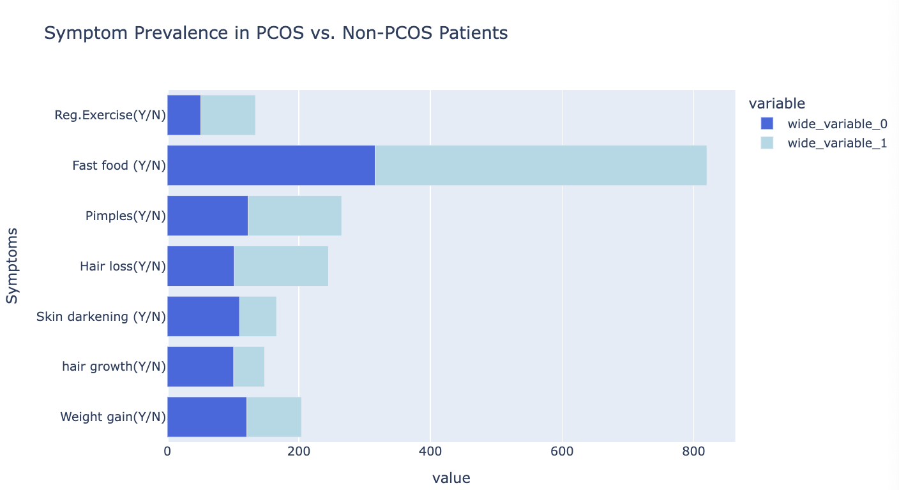
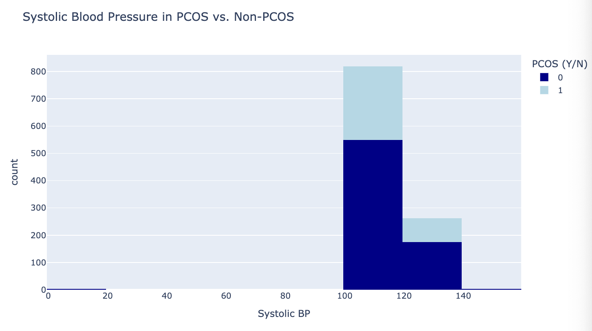
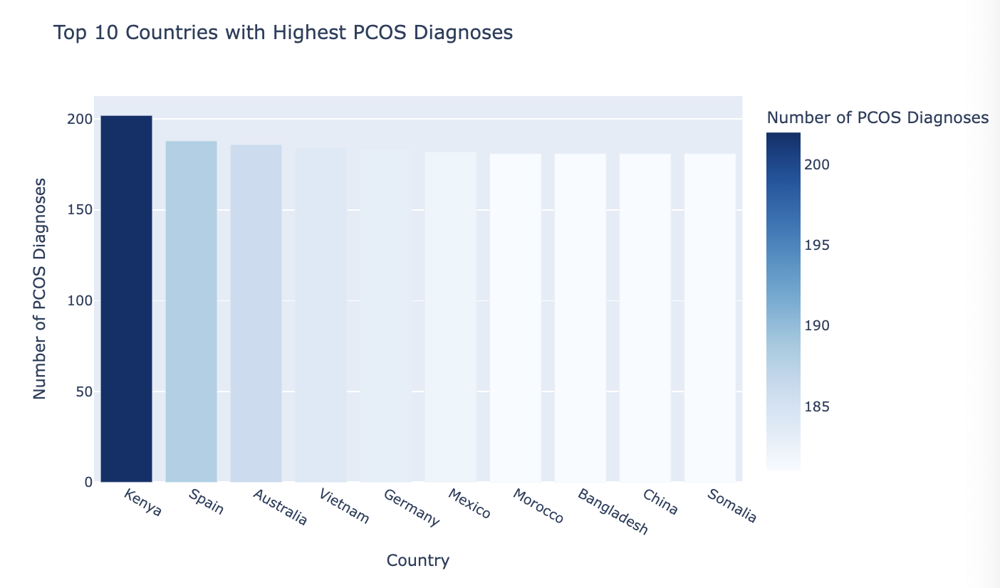
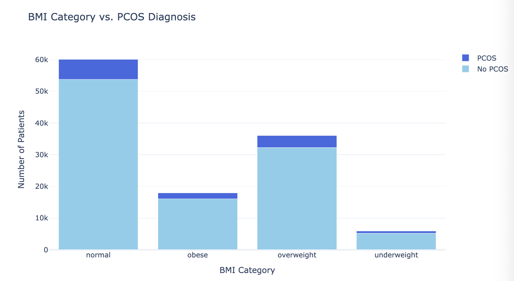
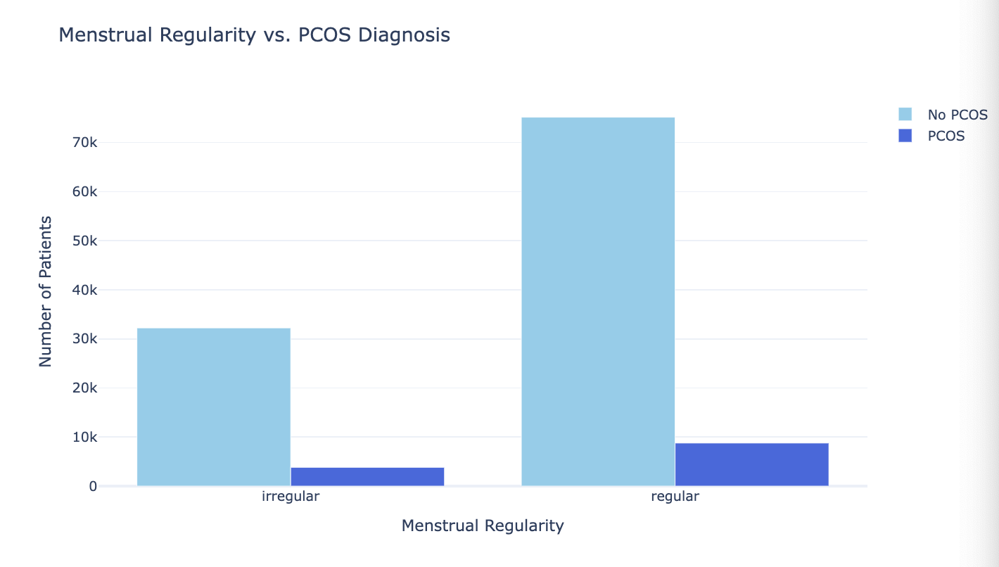
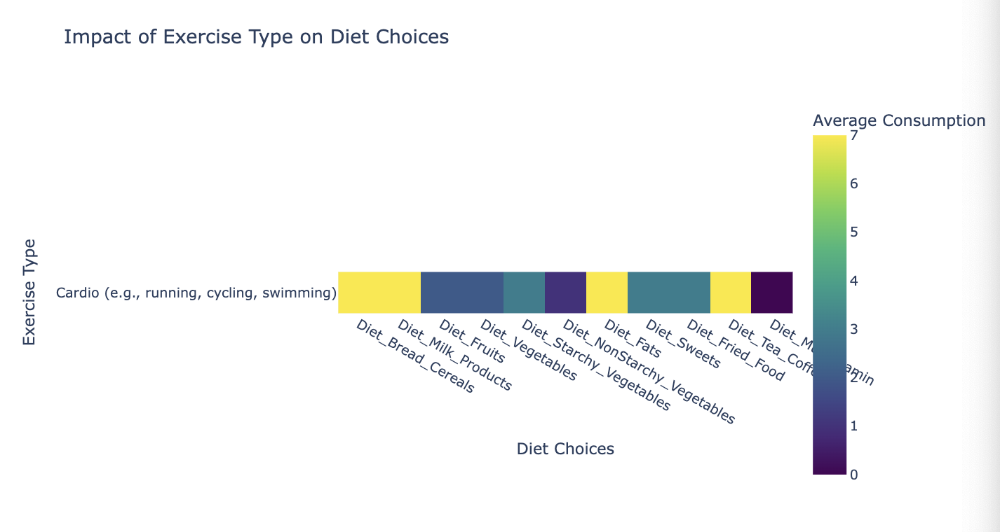
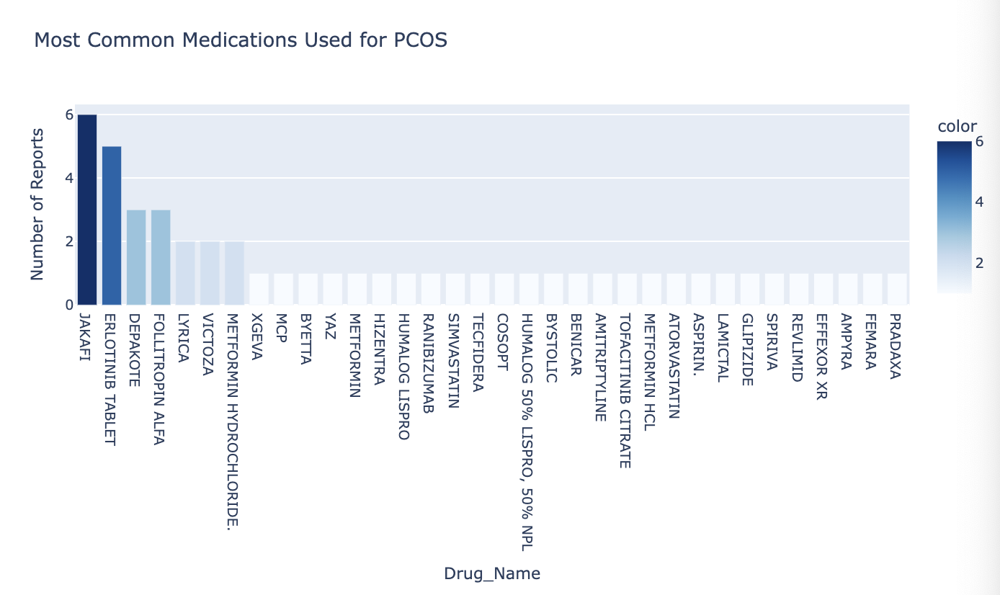
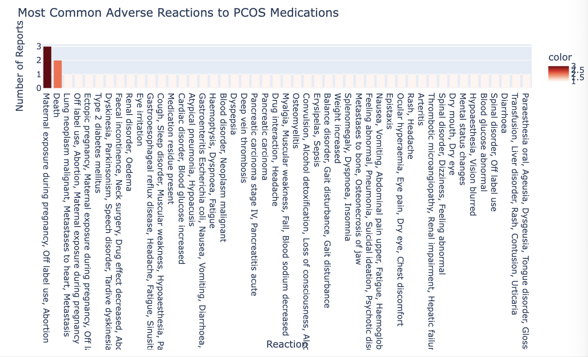

To collect data for PCOS analysis, we downloaded datasets from Kaggle. Below is the code used for downloading the datasets. Click the button to expand and view:
The datasets downloaded help analyze hormonal factors, infertility, and lifestyle effects on PCOS. Below are the files obtained:
📊 Collected PCOS Datasets
The following datasets help analyze hormonal imbalances, infertility, lifestyle patterns, and clinical factors contributing to PCOS.
📜 PCOS Survey Insights
File:CLEAN- PCOS SURVEY SPREADSHEET.csv
A survey-based dataset containing patient-reported PCOS symptoms and lifestyle factors.
📊 Standardized PCOS Data
File:Cleaned-Data.csv
A well-structured and standardized dataset containing cleaned patient records to ensure consistency and accuracy in PCOS analysis.
🏥 Medical PCOS Records
File:PCOS_data.csv
Comprehensive dataset containing medical records of patients diagnosed with PCOS.
📈 Extended Dataset
File:PCOS_extended_dataset.csv
An expanded dataset with additional variables and in-depth features for analysis.
👶 PCOS & Infertility
File:PCOS_infertility.csv
Infertility-related cases of PCOS with data on fertility treatments and outcomes.
💊 FDA Reports on PCOS
File:PCOS_OpenFDA.csv
FDA-sourced data focusing on treatments, medications, and their effectiveness for PCOS.
🤖 Predictive Modeling Dataset
File:pcos_prediction_dataset.csv
Dataset structured for machine learning models aimed at predicting PCOS diagnosis.
×
Step 2: Merging the PCOS Datasets
The datasets collected were fragmented across medical, lifestyle, medication, and demographic information.
To create a comprehensive dataset, we merged multiple datasets while ensuring no data loss, consistency, and accuracy.
📌 The Four Key Merged Datasets
🏥 Core PCOS Dataset
Combines medical & clinical data, including hormonal levels, infertility markers, and exercise patterns.
The Core PCOS Dataset contains medical and clinical information about patients.
The following cleaning steps were applied:
Merged PCOS Data, PCOS Extended, and PCOS Infertility datasets.
Removed duplicate patient records using unique Patient File Numbers.
Filled missing values in BMI, Hormone Levels, and Follicle Count using median values.
Dropped unnecessary columns like "Unnamed: 44."
Converted hormonal markers (II beta-HCG and AMH) into numeric formats.
Performed outlier analysis and visualized attributes like BMI, FSH, LH, and Waist-to-Hip Ratio using boxplots.
import pandas as pd
import numpy as np
import seaborn as sns
import matplotlib.pyplot as plt
# Merging Datasets
core_pcos_df = pd.concat([pcos_data, pcos_extended, pcos_infertility], axis=0, ignore_index=True)
# Removing Duplicates
if "Patient File No." in core_pcos_df.columns:
core_pcos_df = core_pcos_df.drop_duplicates(subset=["Patient File No."], keep="first")
# Handling Missing Values
for col in core_pcos_df.select_dtypes(include=["float64", "int64"]).columns:
core_pcos_df[col].fillna(core_pcos_df[col].median(), inplace=True)
# Dropping Unnecessary Columns
if "Unnamed: 44" in core_pcos_df.columns:
core_pcos_df.drop(columns=["Unnamed: 44"], inplace=True)
# Standardizing Numeric Columns
for col in ["II beta-HCG(mIU/mL)", "AMH(ng/mL)"]:
if col in core_pcos_df.columns:
core_pcos_df[col] = pd.to_numeric(core_pcos_df[col], errors='coerce')
# Outlier Detection and Visualization
plt.figure(figsize=(15, 10))
for i, col in enumerate(["BMI", "FSH(mIU/mL)", "LH(mIU/mL)", "TSH (mIU/L)", "PRL(ng/mL)"], 1):
plt.subplot(3, 4, i)
sns.boxplot(y=core_pcos_df[col])
plt.title(col)
plt.tight_layout()
plt.show()
core_pcos_df.to_csv("Core_PCOS_Dataset_Cleaned.csv", index=False)
print("Core PCOS Dataset cleaned and saved.")
🥗 Cleaning Lifestyle & Diet Dataset
This dataset contains information on dietary habits, exercise routines, and menstrual irregularities in PCOS patients.
Removed redundant columns like Age, Weight, and Height.
Standardized column names by removing special characters.
Filled missing numerical values with the median.
Filled categorical values like Exercise Type, Mental Health, and Diet Preference with the most common category.
Converted categorical data like PCOS Diagnosis and Marital Status into proper formats.
import pandas as pd
# Dropping Duplicate or Irrelevant Columns
columns_to_remove = ["Age", "Weight_kg", "Height_ft"]
lifestyle_diet_df = lifestyle_diet_df.drop(columns=[col for col in columns_to_remove if col in lifestyle_diet_df.columns])
# Standardizing Column Names
lifestyle_diet_df.columns = [col.strip().replace("\n", " ").replace("?", "").replace("/", "_").replace("(", "").replace(")", "").replace("-", "_") for col in lifestyle_diet_df.columns]
# Handling Missing Values
for col in lifestyle_diet_df.select_dtypes(include=["float64", "int64"]).columns:
lifestyle_diet_df[col].fillna(lifestyle_diet_df[col].median(), inplace=True)
for col in lifestyle_diet_df.select_dtypes(include=["object"]).columns:
lifestyle_diet_df[col].fillna(lifestyle_diet_df[col].mode()[0], inplace=True)
lifestyle_diet_df.to_csv("Lifestyle_Diet_Dataset_Cleaned.csv", index=False)
💊 Cleaning PCOS Medication Dataset
This dataset focuses on PCOS medications and their reported side effects.
Removed unnecessary columns like "Age Unit."
Standardized column names for clarity (Drug Name, Age, Gender, Reactions).
This dataset contains demographic details such as BMI, stress levels, fertility concerns, and PCOS awareness.
Standardized column names.
Formatted categorical values for attributes like BMI Categories, Menstrual Regularity, and Ethnicity.
Converted numerical columns like Lifestyle Score to integer format.
import pandas as pd
# Standardizing Column Names
global_pcos_df.columns = [col.strip().replace(" ", "_").replace("/", "_") for col in global_pcos_df.columns]
# Formatting Categorical Values
categorical_cols = ["BMI", "Menstrual_Regularity", "Hirsutism", "Acne_Severity", "Family_History_of_PCOS", "Insulin_Resistance"]
for col in categorical_cols:
global_pcos_df[col] = global_pcos_df[col].astype(str).str.lower().str.strip()
# Converting Numerical Columns
global_pcos_df["Lifestyle_Score"] = global_pcos_df["Lifestyle_Score"].astype(int)
global_pcos_df["Undiagnosed_PCOS_Likelihood"] = global_pcos_df["Undiagnosed_PCOS_Likelihood"].astype(float)
global_pcos_df.to_csv("Global_PCOS_Demographics_Cleaned.csv", index=False)
Step 4: Visualizing the PCOS Datasets
Data visualization helps uncover patterns in PCOS-related symptoms, diagnosis, demographics, lifestyle, and medication use. Below are key visualizations for each dataset.
🏥 PCOS Diagnosis Distribution
This bar chart shows the distribution of PCOS diagnoses in the dataset. Understanding how many individuals are diagnosed versus those who are not helps in identifying prevalence rates in the sample.
The darker shades represent a higher count of diagnoses, making it easier to interpret.

import plotly.express as px
# Count of PCOS Diagnosis
pcos_counts = core_pcos_df["PCOS (Y/N)"].value_counts()
# Create interactive bar chart
fig = px.bar(pcos_counts,
x=pcos_counts.index,
y=pcos_counts.values,
title="PCOS Diagnosis Distribution",
labels={"x": "PCOS Status", "y": "Number of Patients"},
color=pcos_counts.values,
color_continuous_scale="Blues")
# Show plot
fig.show()
📊 Age Distribution in PCOS vs. Non-PCOS Patients
This histogram presents the age distribution of patients diagnosed with PCOS versus non-PCOS patients. The color coding allows for a clear differentiation between affected and unaffected individuals.
This helps identify if there is a common age range where PCOS is more prevalent.

import plotly.express as px
# Create histogram
fig = px.histogram(core_pcos_df,
x=" Age (yrs)",
color="PCOS (Y/N)",
title="Age Distribution in PCOS vs. Non-PCOS Patients",
labels={" Age (yrs)": "Age (Years)"},
nbins=15,
color_discrete_sequence=["royalblue", "lightblue"])
# Show plot
fig.show()
⚕️ Symptom Prevalence in PCOS vs. Non-PCOS Patients
This horizontal bar chart shows how common different symptoms are among PCOS and non-PCOS patients.
Symptoms such as weight gain, hair loss, and pimples appear more frequently in PCOS patients, providing insights into common indicators of the condition.

import plotly.express as px
# Selecting symptom columns
symptom_cols = ["Weight gain(Y/N)", "hair growth(Y/N)", "Skin darkening (Y/N)",
"Hair loss(Y/N)", "Pimples(Y/N)", "Fast food (Y/N)", "Reg.Exercise(Y/N)"]
# Count symptoms in PCOS vs. Non-PCOS
pcos_symptoms = core_pcos_df[core_pcos_df["PCOS (Y/N)"] == 1][symptom_cols].sum()
non_pcos_symptoms = core_pcos_df[core_pcos_df["PCOS (Y/N)"] == 0][symptom_cols].sum()
# Create horizontal bar chart
fig = px.bar(x=[pcos_symptoms, non_pcos_symptoms],
y=symptom_cols,
orientation="h",
title="Symptom Prevalence in PCOS vs. Non-PCOS Patients",
labels={"x": "Number of Patients", "y": "Symptoms"},
color_discrete_sequence=["royalblue", "lightblue"])
# Show plot
fig.show()
💙 Systolic Blood Pressure in PCOS vs. Non-PCOS Patients
This histogram compares systolic blood pressure (BP) levels in PCOS versus non-PCOS individuals. Since hypertension can be a comorbidity with PCOS,
this visualization explores whether there is a significant difference in BP readings between the two groups.

import plotly.express as px
# Create histogram for Systolic BP
fig = px.histogram(core_pcos_df,
x="BP _Systolic (mmHg)",
color="PCOS (Y/N)",
title="Systolic Blood Pressure in PCOS vs. Non-PCOS",
labels={"BP _Systolic (mmHg)": "Systolic BP"},
nbins=10,
color_discrete_sequence=["darkblue", "lightblue"])
fig.show()
🌎 Top 10 Countries with Highest PCOS Diagnoses
This visualization presents the 10 countries with the highest reported cases of PCOS. Understanding regional prevalence helps with global health policies
and awareness campaigns.

import plotly.express as px
# Top 10 Countries with Highest PCOS Diagnoses
pcos_by_country_plotly = global_pcos_df[global_pcos_df["Diagnosis"] == "yes"]["Country"].value_counts().head(10).reset_index()
pcos_by_country_plotly.columns = ["Country", "PCOS Cases"]
# Create interactive bar chart
fig = px.bar(pcos_by_country_plotly, x="Country", y="PCOS Cases",
title="Top 10 Countries with Highest PCOS Diagnoses",
labels={"PCOS Cases": "Number of PCOS Diagnoses"},
color="PCOS Cases", color_continuous_scale="blues")
# Show plot
fig.show()
📊 BMI Category vs. PCOS Diagnosis
This stacked bar chart examines the relationship between BMI categories and PCOS diagnosis. It helps understand whether obesity or weight categories play a significant role in PCOS prevalence.

# Count of PCOS Diagnoses by BMI Category
bmi_pcos_counts = global_pcos_df.groupby("BMI")["Diagnosis"].value_counts().unstack().reset_index()
bmi_pcos_counts.columns = ["BMI Category", "No PCOS", "PCOS"]
# Create interactive stacked bar chart
fig = go.Figure()
fig.add_trace(go.Bar(
x=bmi_pcos_counts["BMI Category"],
y=bmi_pcos_counts["No PCOS"],
name="No PCOS", marker_color="skyblue"
))
fig.add_trace(go.Bar(
x=bmi_pcos_counts["BMI Category"],
y=bmi_pcos_counts["PCOS"],
name="PCOS", marker_color="royalblue"
))
# Update layout
fig.update_layout(
title="BMI Category vs. PCOS Diagnosis",
xaxis_title="BMI Category",
yaxis_title="Number of Patients",
barmode="stack",
template="plotly_white"
)
# Show plot
fig.show()
🩸 Menstrual Regularity vs. PCOS Diagnosis
This grouped bar chart shows the distribution of menstrual regularity among PCOS and non-PCOS patients. Since irregular menstrual cycles are a common symptom of PCOS,
this visualization highlights the correlation between cycle irregularities and diagnosis.

# Count of PCOS Diagnoses by Menstrual Regularity
menstrual_pcos_counts = global_pcos_df.groupby("Menstrual_Regularity")["Diagnosis"].value_counts().unstack().reset_index()
menstrual_pcos_counts.columns = ["Menstrual Regularity", "No PCOS", "PCOS"]
# Create interactive grouped bar chart
fig = go.Figure()
fig.add_trace(go.Bar(
x=menstrual_pcos_counts["Menstrual Regularity"],
y=menstrual_pcos_counts["No PCOS"],
name="No PCOS", marker_color="skyblue"
))
fig.add_trace(go.Bar(
x=menstrual_pcos_counts["Menstrual Regularity"],
y=menstrual_pcos_counts["PCOS"],
name="PCOS", marker_color="royalblue"
))
# Update layout
fig.update_layout(
title="Menstrual Regularity vs. PCOS Diagnosis",
xaxis_title="Menstrual Regularity",
yaxis_title="Number of Patients",
barmode="group",
template="plotly_white"
)
# Show plot
fig.show()
🥗 Dietary Habits Overview
This visualization provides an overview of dietary habits among PCOS patients. It categorizes food groups such as fruits, vegetables, dairy, and fast food,
helping identify how diet might contribute to PCOS symptoms.
This heatmap shows how different exercise types influence dietary choices. It is important to see whether patients who engage in regular exercise have healthier dietary habits,
which may help in PCOS symptom management.

import pandas as pd
import plotly.express as px
# Selecting exercise type and diet categories
diet_columns = [
"Diet_Bread_Cereals", "Diet_Milk_Products", "Diet_Fruits", "Diet_Vegetables",
"Diet_Starchy_Vegetables", "Diet_NonStarchy_Vegetables", "Diet_Fats",
"Diet_Sweets", "Diet_Fried_Food", "Diet_Tea_Coffee", "Diet_Multivitamin"
]
# Group by Exercise Type and get the average diet habits
exercise_diet_avg = lifestyle_diet_df.groupby("Exercise_Type")[diet_columns].mean()
# Create a heatmap
fig = px.imshow(exercise_diet_avg,
labels=dict(x="Diet Choices", y="Exercise Type", color="Average Consumption"),
x=exercise_diet_avg.columns,
y=exercise_diet_avg.index,
color_continuous_scale="Viridis",
title="Impact of Exercise Type on Diet Choices")
# Show plot
fig.show()
💊 Most Common Medications for PCOS
This bar chart visualizes the most commonly prescribed medications for PCOS treatment. It helps understand which medications are most frequently used to manage symptoms and hormonal imbalances.

import plotly.express as px
# Count the occurrences of each drug
drug_counts = pcos_med_df["Drug_Name"].value_counts()
# Create interactive bar chart
fig = px.bar(drug_counts,
x=drug_counts.index,
y=drug_counts.values,
title="Most Common Medications Used for PCOS",
labels={"x": "Drug Name", "y": "Number of Reports"},
color=drug_counts.values,
color_continuous_scale="Blues")
# Show plot
fig.show()
⚠️ Most Common Adverse Reactions to PCOS Medications
This bar chart displays the most commonly reported side effects from PCOS medications. This information is valuable in assessing the risk of treatment-related adverse reactions.

import plotly.express as px
# Count occurrences of each reaction
reaction_counts = pcos_med_df["Reaction"].value_counts()
# Create bar chart
fig = px.bar(reaction_counts,
x=reaction_counts.index,
y=reaction_counts.values,
title="Most Common Adverse Reactions to PCOS Medications",
labels={"x": "Adverse Reaction", "y": "Number of Reports"},
color=reaction_counts.values,
color_continuous_scale="Reds")
# Show plot
fig.show()